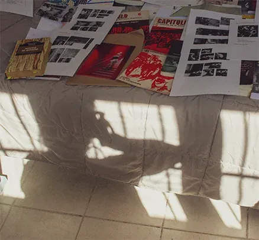

Bienvenida/o a mi
sitio personal.
Soy
Candela Gencarelli, artista, educadora e investigadora radicada en Córdoba,
Argentina. Soy Profesora en Ciencias de la Educación y Doctora en
Estudios Sociales de América Latina por la Universidad Nacional de
Córdoba. Fui becaria doctoral de CONICET entre 2022 y 2024.
Mi trabajo cruza arte, educación y cultura visual, con especial interés en la fotografía, la memoria, el género y las pedagogías de la imagen. Investigo y desarrollo proyectos artísticos y educativos vinculados con las formas en que las imágenes producen experiencias, relatos y conocimientos. Trabajo con escritura, fotografía y cerámica, y me interesa especialmente la integración entre lenguajes artísticos, archivo afectivo y procesos colaborativos.
En la actualidad integro el área de Comunicación y Medios de KeyLab, donde desarrollo estrategias culturales y visuales vinculadas al diseño de software y a la exploración crítica de nuevas tecnologías.
Desde 2019 realizo tareas de dirección artística en La Casa Mutante, un espacio cultural independiente desde el cual impulso producciones musicales, audiovisuales y escénicas que cruzan disciplinas, temporalidades y modos de hacer colectivo.
Como podrás notar, mi trayectoria articula arte, pedagogía y archivo como prácticas situadas de creación, cuidado y pensamiento crítico. Si te interesa conocer con mayor detalle las instituciones y proyectos en los que trabajé podes contactarme en candelagencarelli@gmail.com.